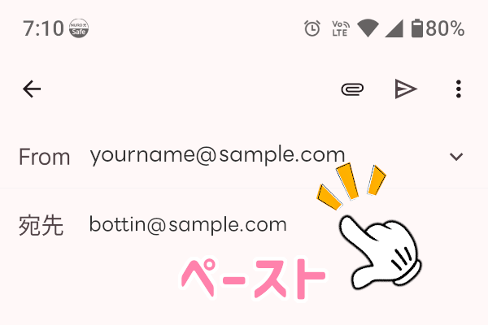
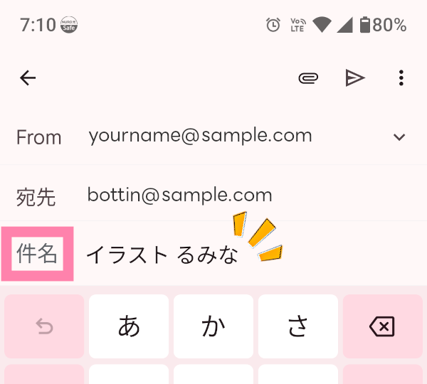
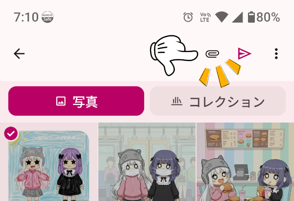
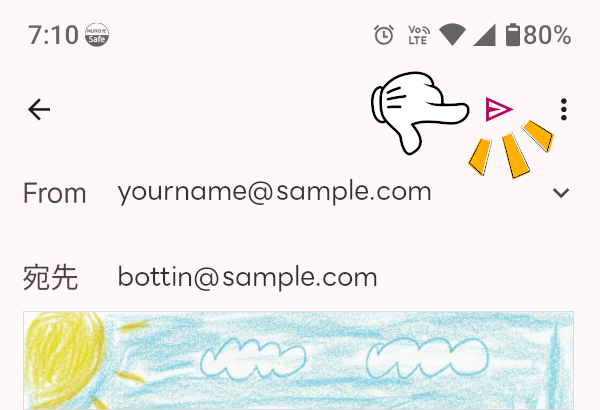

メールで送るやり方
「ぼっちんガイド公式ホームページ」に、キミのイラストをかざっちゃおう！
キミが一生懸命かいたステキなイラストを、ぼっちんに送ってね♪「どうやってメールで送ればいいの？」というキミのために、 イラストを送る方法を教えるね！
少し難しいところも あるから、 おうちの人と一緒にやってみてね。
⚠️下の3つが分かる画像 は送らないでね
①キミの顔がうつっている写真
②おうちや、学校の場所がわかる
写真
③名札や学校の
名前が書いてある写真
メールアドレスの準備
「コピー」ボタンをポチッと押してね。
ぼっちんのメールアドレスを覚えるよ
moc.liamg@odiag.nittob
ステップ1
メールのアプリを 開こう
「Gmail」や「Yahoo!メール」など、 いつも使ってるメールアプリをひらいてね （わからない時は、 おうちの人と一緒にやってね）
「Gmail」や「Yahoo!メール」など、 いつも使ってるメールアプリをひらいてね （わからない時は、 おうちの人と一緒にやってね）

ステップ2
「宛先」を 選んで、
さっき覚えたアドレスを
「ペースト（貼り付け）」 してね。

ステップ3
メールの件名には、こう書いてね。
イラスト キミのお名前（ニックネーム）
※これが入っていると、ぼっちんがすぐに見つけてくれるよ♪

ステップ4
「クリップのマーク（）」 をおして、キミが描いたイラストを えらんでね。

ステップ5
「送信」ボタンを おしてね。
キミのすてきなイラストが届くのを、 楽しみに待ってるよ♪
キミのすてきなイラストが届くのを、 楽しみに待ってるよ♪
